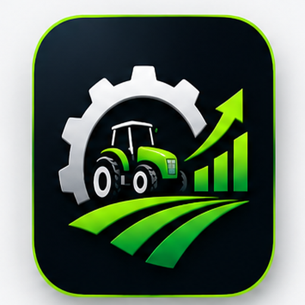

واتساب
دفاتر وورق
ملفات إكسل
أشخاص مختلفين

زراعي برو
إيرادات الشغل
متصلة بالعميل
رصيد العهدة
محدّث أول بأول
حالة المعدات
واضحة قدامك
مستحقات العملاء
بتتحسب لوحدها
بدل ما تجمع الأرقام، خلي الصورة قدامك
الإيرادات
من كل الشغلانات
تكلفة الوقود
لكل شغلانة
صافي الربح
إيراد ناقص تكلفة
تكلفة الصيانة
لكل معدة
المرتبات
من ليدجر السواقين
الضرائب والخصومات
سجل مستقل
جديد
ابعت كشف حساب على واتساب في ثانية
كشف حساب، تذكير بالمستحق، أو شكر على التعامل — نص جاهز ومنسّق من بيانات الشخص فعليًا.
واتساب
كشف حساب
تذكير بالمستحق
شكر على التعامل
تنبيه غياب
بيانات أوضح. قرارات أذكى. أرباح أكبر.
زراعي برو